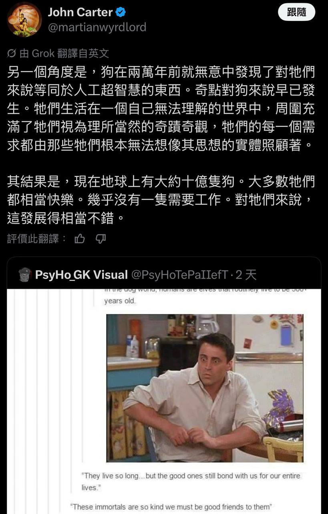
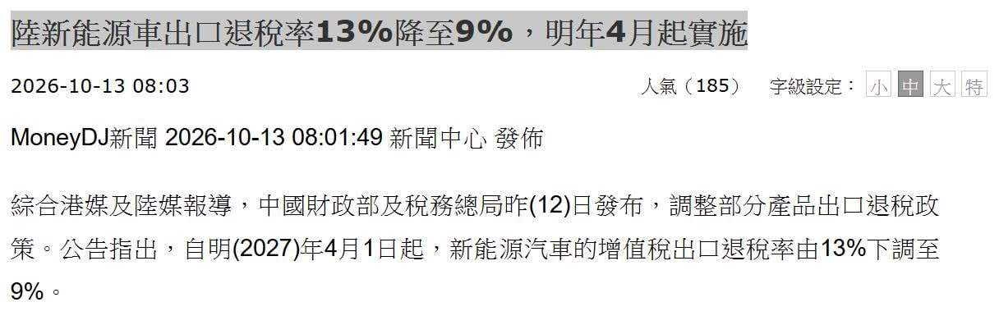

過去 26 小時共 4 則，沒有業配或集數推播。前兩則是昨天傍晚的 AI 與狗的迷因閒聊；今天早上的重點是中國宣布 2027 年 4 月起把新能源車出口退稅率從 13% 降到 9%，主委點評了對車廠出口節奏與競爭格局的影響。
Damn

X 上 John Carter（@martianwyrdlord）的貼文截圖（Grok 翻譯成中文）：狗在兩萬年前就「發現」了對牠們來說等同人工超智慧的存在（人類），奇點對狗早已發生；結果是地球上約十億隻狗，多數很快樂、幾乎不用工作。下方引用一張 tumblr 迷因：在狗的世界裡，人類是能活好幾百歲的精靈。
（#6477 無文字）
對話截圖：對方回「但是狗狗隨時都會莫名其妙抓去被閹掉😂，以後需要擔心了」，另一方回笑臉與「『你不需要那個」（截圖在此截斷）。
講解：這是 AI 圈常見的「超智慧之下人類像寵物」比喻：如果未來 AI 遠比人類聰明，人類可能像狗一樣被照顧得很好、不必工作，但也失去對自身處境的理解與決定權。#6477 是主委補的反諷：被照顧的代價是某些決定（例如結紮）由「主人」替你做。屬於閒聊性質，沒有具體投資觀點。
短期提供誘因開始刷數字 pull in，中期價格競爭捲捲幫的壓力提高，海外布局本地化產能和供應鏈的獲得優勢
中國本身則是往減輕補貼的財政負擔方向去
https://www.moneydj.com/funddj/ya/yp050000.djhtm?a=f4fc5e8f-361d-465d-8641-443f715af820

MoneyDJ 新聞截圖（2026-10-13 08:03）：「陸新能源車出口退稅率13%降至9%，明年4月起實施」——中國財政部與稅務總局 10/12 公告，自 2027 年 4 月 1 日起，新能源汽車增值稅出口退稅率由 13% 下調至 9%。
政策查證：公告內容與截圖一致。補充原始報導的細節：退稅率以報關單上的出口日期為準；同一公告也取消電子菸設備等產品的出口退稅；有消費稅的產品，出口消費稅政策不變。新能源車自 2019 年增值稅改革起就與燃油車同為 13%，那是全產業普惠性的稅率，並非專門扶植電動車，這次是首次單獨針對新能源車下調，燃油車不受影響。背景數據：乘聯會統計 9 月新能源乘用車出口 55.8 萬輛（年增 163.5%），1–9 月累計 388.7 萬輛（年增 138.8%）。這也延續了今年 1 月的方向：光伏出口退稅 2026/4/1 起取消、電池退稅 2026/4–12 月由 9% 降到 6%、2027/1/1 起取消。
機制講解：出口退稅是把貨品在國內生產環節繳過的增值稅退還給出口商，讓產品以「不含稅」價格出海。退稅率從 13% 降到 9%，等於每輛車少退約 4% 的進項稅，對毛利本來就薄、靠低價搶市的車廠是直接的成本上升（實際影響取決於各車廠進項稅結構，報導中沒有具體測算）。
註：MoneyDJ 原文未直接讀取，以貼文截圖與其他媒體報導為準。